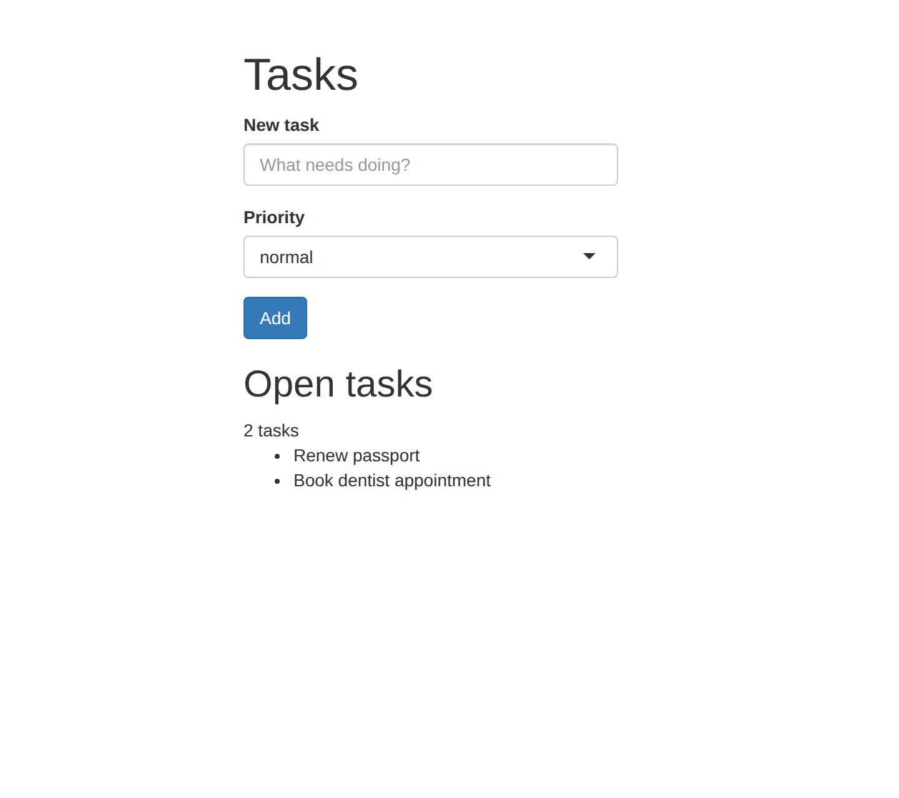
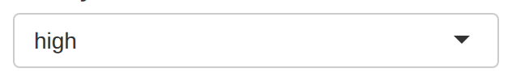
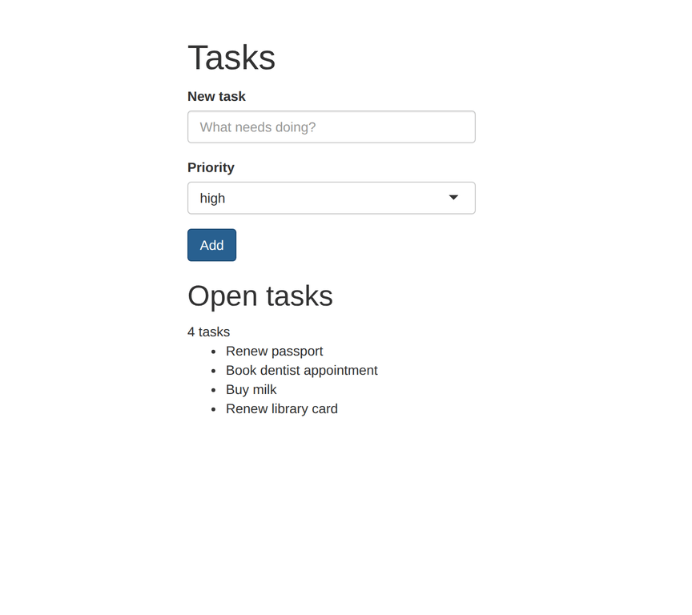

In this article, we’ll open, test, and record a Shiny version of the task tracker that comes with paparazzi. A Shiny app is still a web page. Actions, expectations, screenshots, and recordings work on it exactly as they do on any other page. Shiny only adds a few things for you to learn.
Those few things come from how Shiny apps work. We first have to start up a Shiny server to run the app before a browser can open it. And the app isn’t ready when the browser finishes loading the page: you have to wait for the outputs from the server to settle. The same wait comes up each time an input changes an output. Also some inputs, like selectize dropdowns and sliders, are awkward to set by clicking. We’ll see how paparazzi handles each of these, then use the same code to both test the app and grab a screen recording.
If you haven’t used paparazzi before, start with the Get started article, which introduces actions, expectations, and scopes on a static page. You’ll need Chrome or another Chromium-based browser, the shiny package, and, for the recording at the end, the gifski and png packages.
Open an app
pz_open() opens a Shiny app when you give it the app’s
directory or app.R file. paparazzi starts the app in a
background R process, opens it in the browser, and waits until Shiny is
ready. pz_example("tasks-app") returns the path to the
example app, a simple Shiny version of the task tracker from the Get
started article:
page <- pz_open(
pz_example("tasks-app"),
width = 720,
height = 640
)
page |> pz_screenshot()
paparazzi considers Shiny ready when it’s idle: the
browser has connected to the app, and Shiny hasn’t been busy or
recalculating any outputs for at least 200 milliseconds. The list is
already in the screenshot because pz_open() waited the half
second the app takes to render it.
Because paparazzi started a Shiny server for this page,
pz_close(page) both closes the page in the browser
and stops the app. The app runs in a separate R process and
can’t see objects in your R session. If the app needs settings, pass
them to pz_open() as environment variables with
envvars, or as shiny::runApp() options with
shiny_options.
Wait for the server
Because Shiny app typically does its work on the server, the page changes a moment after each input. When a person using the app clicks Add, the browser sends a message to the server, which adds the task, recalculates the summary, and re-renders the list. Until the server finishes, the page still shows the old list.
pz_wait_for_shiny_idle() waits until Shiny is idle
again. Use it when you need the app to catch up but don’t need to check
a specific value:
page |>
pz_set_value("Buy milk", target = "#title") |>
pz_act_click("#add") |>
pz_wait_for_shiny_idle()
pz_get_text(page, target = "#summary")
#> [1] "3 tasks"pz_set_value() works the same on any page by setting the
input’s value and firing the input and change
events that Shiny listens for.
When you know what the page should show, use an expectation instead. An expectation waits for exactly what you care about. It retries until the page shows the value you expect. If the value never appears, its error says what it was looking for and what it last saw:
page |>
pz_set_value("Renew library card", target = "#title") |>
pz_act_click("#add") |>
pz_expect_text("4 tasks", target = "#summary")Set inputs through Shiny
Some Shiny inputs are hard to set by clicking. The priority input in
this app is a selectize input: Shiny hides the
<select> element and builds the dropdown that a
person using the app sees from other elements. Shiny reads and updates
each input through its input binding, a JavaScript
object that knows how that kind of input works.
pz_set_shiny_input() sets an input through its binding.
It takes the input’s ID and a value, then waits for Shiny to go idle
before the next step runs. The dropdown on the page shows the new value,
and the server sees it:
page |>
pz_set_shiny_input("priority", "high") |>
pz_screenshot(frame = pz_frame(".selectize-control", pad = 8))
pz_set_shiny_input() works with inputs whose binding can
set a value, including sliders and date ranges. For file inputs and
action buttons, which it can’t set, use pz_set_files() and
pz_act_click().
For inputs that are easy to reach, like text boxes and buttons,
pz_act_type(), pz_set_value(), and
pz_act_click() are closer to what a person using the app
does. In a recording, pz_act_type() types one character at
a time, while pz_set_shiny_input() and
pz_set_value() change the value at once. Prefer actions in
anything you record.
Share one app across pages
Each time you give pz_open() an app path, paparazzi
starts another copy of the app in its own R process, and starting an app
takes time.
When you want the same app in several browser windows at once, like a
desktop window and a phone-sized one, start the app once with
pz_serve_shiny() and pass the handle it returns to each
pz_open() call. Printing the handle shows the app’s URL and
whether it’s running:
app <- pz_serve_shiny(pz_example("tasks-app"))
app
#> <paparazzi app> http://127.0.0.1:5048/ -- running (pid 13895)
desktop <- pz_open(app, width = 1024, height = 640)
phone <- pz_open(app, width = 390, height = 640, mobile = TRUE)Each page gets its own Shiny session and its own task list. When we add a task on the desktop page, the phone page still shows the two tasks the app starts with:
desktop |>
pz_set_value("Buy milk", target = "#title") |>
pz_act_click("#add") |>
pz_expect_text("3 tasks", target = "#summary")
pz_get_text(phone, target = "#summary")
#> [1] "2 tasks"Closing a page opened from a handle leaves the app running, and you
stop the app yourself when you’re done. Before stopping it,
app$logs() returns what the app printed, which helps when
an app fails to start or errors partway through:
pz_close(desktop)
pz_close(phone)
head(app$logs())
#> [1] "Loading required package: shiny" ""
#> [3] "Listening on http://127.0.0.1:5048"
app$stop()In a script, withr::defer(app$stop()) stops the app even
if a later step fails.
Test an app
You can write tests for a Shiny app with the same functions we’ve
used so far. When paparazzi’s expectations run inside a testthat test, each one counts as
a testthat expectation, and a failed one fails the test.
pz_local_page() opens a page and closes it when the test
ends. Given an app path, it also starts the app and stops it when the
test ends. Here’s the “Buy milk” step from earlier as a test:
test_that("adding a task updates the summary", {
page <- pz_local_page(pz_example("tasks-app"))
page |>
pz_set_value("Buy milk", target = "#title") |>
pz_act_click("#add") |>
pz_expect_text("3 tasks", target = "#summary")
})For your own app, give pz_local_page() the path to the
app’s directory. To share one running app across tests, start it with
pz_serve_shiny() in a setup file and pass the handle to
pz_local_page() instead. Then you stop the app yourself,
for example with
withr::defer(app$stop(), testthat::teardown_env()) in the
same setup file.
shinytest2 is also built for testing Shiny apps, and it works differently. shinytest2 tests check the app’s reactive logic by recording the app’s input and output values and comparing them against saved snapshots. paparazzi tests check what a person using the app sees and does by finding elements with CSS selectors and using the page with the same mouse and keyboard events as that person. Both can live in the same test suite.
Record a demo
You record a Shiny app the same way as any other page. Here, we’ll
stage the page so the cursor glides in from the left and each step
pauses for 0.4 seconds, then wrap the steps in
pz_record():
page |>
pz_stage(enter = "left", pause = 0.4) |>
pz_record(
code = {
page |>
pz_act_type("Water the plants", target = "#title") |>
pz_act_click("#add") |>
pz_expect_text("5 tasks", target = "#summary") |>
pz_cursor_leave()
},
format = "gif",
scale = 0.6
)
The video shows the new task at the end of the list because
pz_expect_text() waits for the server to add it before the
recording ends.